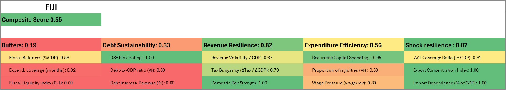

Fiji
 | Binding constraints • Buffers remain critically low relative to the scale and frequency of shocks, limiting the ability to smooth fiscal adjustment and forcing procyclical responses • Extreme exposure to external and climate shocks amplifies fiscal volatility, particularly through the tourism channel • Debt sustainability is fragile under stress, as weak buffers and volatile revenues increase sensitivity to shocks despite concessional financing |

Fiscal context and recent trends
Fiji entered the COVID-19 pandemic with already elevated fiscal deficits (around 4–6 percent of GDP), reflecting sustained infrastructure investment and expansionary fiscal policy. The pandemic triggered an exceptionally severe contraction, with cumulative GDP losses exceeding 15 percent during 2020–2021 as tourism activity collapsed. Fiscal deficits widened sharply to around 10 percent of GDP and public debt increased from roughly 50 percent to above 80 percent of GDP. Despite these pressures, Fiji’s current Fiscal Resilience profile shows important areas of strength. Revenue Resilience is exceptionally strong (0.82), supported by the region’s strongest Domestic Revenue Strength score (1.00), strong tax buoyancy (0.79), and relatively diversified revenue administration capacity compared to smaller PICs. Shock Resilience is also very high (0.87), reflecting comparatively stronger economic scale, disaster financing mechanisms, and broader recovery capacity. However, Buffers remain critically weak (0.19), with the lowest Fiscal Liquidity Index score (0.00) and extremely limited expenditure coverage (0.02), indicating that liquidity buffers remain far below levels appropriate for a shock-prone economy. Debt Sustainability remains weak (0.33), reflecting elevated debt burdens and limited fiscal space despite the ongoing recovery in tourism.
Fiscal context and recent trends
Fiji entered the COVID-19 pandemic with already elevated fiscal deficits, averaging around –4 to –6 percent of GDP in the pre-pandemic period, largely reflecting sustained public investment programs and infrastructure spending cycles. The pandemic led to an unprecedented contraction in economic activity, with GDP declining by over 15 percent cumulatively in 2020–2021, driven by the collapse in tourism, which accounts for roughly 35–40 percent of GDP and employment (direct and indirect). This degree of tourism dependence is among the highest in the PIC-11, where revenues are already highly procyclical and sensitive to external demand conditions. Fiji’s fiscal balance declined by around 10 percentage points of GDP during the pandemic, placing it among the most severely affected countries in the region. Across the region, fiscal balances deteriorated sharply during the pandemic, with several countries experiencing declines exceeding 10 percentage points of GDP, reflecting the scale of the shock and the limited insulation of fiscal systems from external shocks.
Fiscal balances deteriorated sharply, with the deficit widening to approximately –10 percent of GDP, and public debt increasing from about 50 percent of GDP pre-pandemic to over 80 percent at its peak. This increase exceeded the regional average rise in public debt, which went from roughly 40 percent of GDP in 2018–19 to around 65 percent in 2021, underscoring the severity of Fiji’s fiscal shock relative to peers. Although much of this borrowing was concessional, the speed and scale of the increase significantly reduced fiscal space and left Fiji’s fiscal positions highly sensitive to subsequent shocks.
The post-pandemic recovery has been strong, supported by the return of tourism flows, with arrivals reaching near pre-pandemic levels by 2023–202This has led to a rebound in revenues, particularly indirect taxes linked to consumption and tourism. However, fiscal consolidation has been partial. Debt remains elevated, buffers remain limited, and fiscal outcomes continue to be highly sensitive to external conditions.
Resilience profile (FRI results)
These results highlight a highly uneven resilience profile. Strong revenue performance in the recovery phase masks underlying structural vulnerabilities, particularly weak buffers and extremely high exposure to shocks.
Buffers
Fiji’s buffer score (0.19) reflects very limited liquid fiscal space. Cash balances that cover around 1–2 months of spending is considered adequate for shock-prone economies. As Fiji is currently experiencing negative balances, thislimits the country’s ability to smooth fiscal adjustment. Across the PIC-11, low liquidity levels are common and reflect a broader structural pattern where governments rely on continuous revenue inflows or external financing rather than accumulated buffers, limiting their ability to smooth shocks.
While the negative position of fiscal balances have improved since the pandemic (-13.7% of GDP in 2021), they remain at around –4.4% of GDP in 202 around This reflects both continued spending pressures and the structural difficulty of generating sustained surpluses in a highly volatile economic environment.
Debt sustainability
Debt indicators (0.33) suggest moderate sustainability under baseline conditions, supported by concessional financing and long maturities. However, these indicators understate vulnerability under stress scenarios.
Given weak buffers and high volatility, even moderate shocks can quickly translate into renewed borrowing needs. Debt service-to-revenue ratios remain elevated and sensitive to fluctuations in revenue, particularly those linked to tourism.
Revenue resilience
The relatively strong revenue score (0.82) reflects the cyclical rebound in tourism-driven revenues. However, this strength is not structural.
Revenue volatility remains high, as a large share of revenues is tied to consumption and tourism activity. Indirect taxes dominate, while direct taxation remains relatively underdeveloped. As a result, revenues are highly sensitive to global demand shocks and external conditions.
Expenditure efficiency and flexibility
Expenditure performance (0.56) is mixed. While Fiji has relatively developed budget systems compared to smaller PICs, expenditure rigidity remains significant.
The public wage bill and recurrent expenditures account for a large share of spending, limiting adjustment flexibility. During periods of fiscal stress, adjustment has historically relied on compression of capital expenditure, contributing to volatility in public investment and undermining long-term growth and resilience.
Shock exposure
Fiji’s shock exposure score (0.87) perormed relatively well for the region. t enjoys the lowest import dependency of the region (63.5% of GDP)
Although the country is highly vulnerable to natural and climate-related disasters. Annual average losses from natural disasters are estimated at around 2–4 percent of GDP, with extreme events causing significantly larger impacts. This level of exposure requires substantially higher buffers and stronger fiscal frameworks than currently observed.
Policy implications
Rebuilding buffers is the most immediate priority. This requires sustained fiscal surpluses during recovery periods and the institutionalization of saving mechanisms to prevent procyclical spending during booms.
Given the scale of shock exposure, Fiji also needs to strengthen disaster risk financing, including the integration of contingent instruments (such as insurance and contingent credit lines) within a broader fiscal framework.
Debt management should remain conservative and explicitly incorporate downside risks, with debt strategies aligned to buffer accumulation and shock scenarios.
Finally, improving expenditure flexibility—particularly by protecting capital investment and strengthening public investment management—will be critical to avoid growth-damaging adjustment during future shocks.
Key transmission channels
• Tourism demand shocks (primary channel)
• Natural disasters (cyclones, flooding)
• External financing conditions